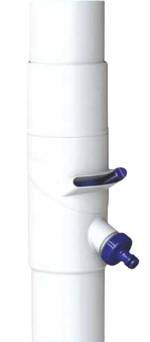
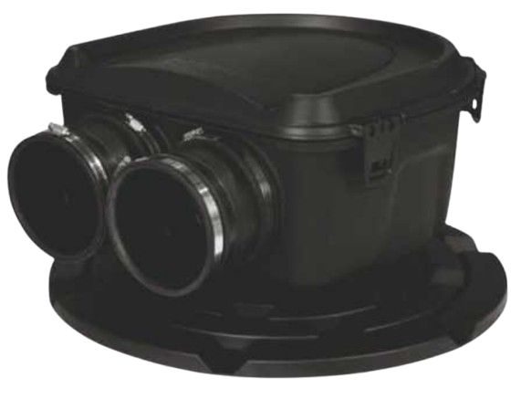
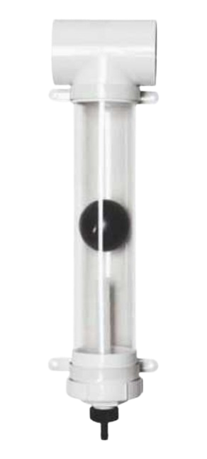
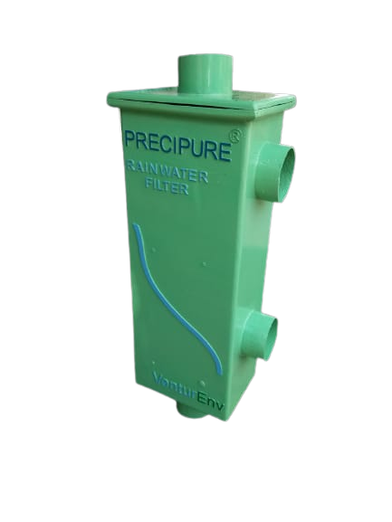
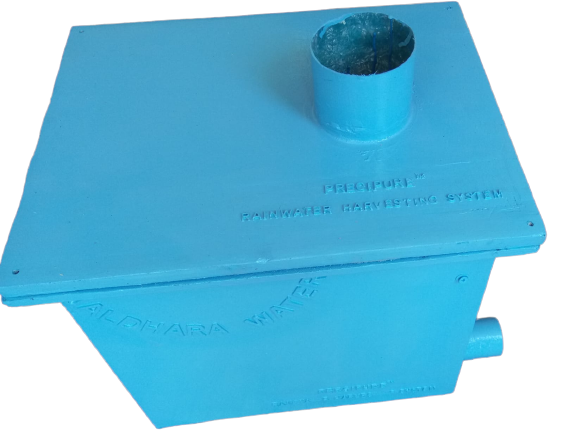

DOWNPIPE DIVERTER
Now Every Roof Can Harvest Rainwater

- Perfect solution for simplifying rainwater harvesting work in old buildings with least damage to the building
- Reduces plumbing work, piping and associated inconvenience & expenses significantly by diverting rainwater from downpipes to storage or recharge system using a 32mm hose pipe
- Makes rainwater harvesting possible even in buildings with rain downpipes mixed with bathroom & kitchen pipes by diverting rainwater from appropriate points on downpipes
- Simple installation
- On/off switch provides flexibility to revert to original mode whenever required
MAELSTROM FILTER
Blending Versatility With Effectiveness

- Single-Point rainwater filter with unique U-shaped design and 180 micron screen prevents even the minutest of the particles from entering the storage tank
- Can easily handle high flow rates from large catchments
- Can be installed in-tank, on-tank, on-wall or in a pit
- Easy maintenance
FIRST FLUSH
Foremost Step to Effectiveness

- Significant function of flushing out dirt, debris, droppings, insects and pollutants before first entry of rainwater in the system
- Easy installation
- Self cleaning
RAIN HEAD
Leave The Conventional Behind

- Great alternative to desilting pit
- Reduces silt load significantly on recharge pit
- Large roof area coverage
- Helps utilise more effective capacity of recharge pit
- Easy maintenance
- Sleek, modern design to match with building architecture
SCREEN-CUM-SAND FILTERS
Filtering Rainwater Comprehensively

- Compact design ensures installation in very less space
- Can be installed on-wall, on-ground or partially on-ground
- Easy & quick to install
- Dual SS304/LCG plain & Sieve bend removable V-Wire screens with unique non-clogging, continuous slot design
- Graded & washed silica sand free of organic impurities adds extra filtration efficiency as compared to normal filters
- Optional first flush system to further improve efficiency

- Provision of overflow connection to eject excess water
- Can be disassembled and reassembled, if required, to change location or for maintenance
- Variants available as per specific requirement and budget